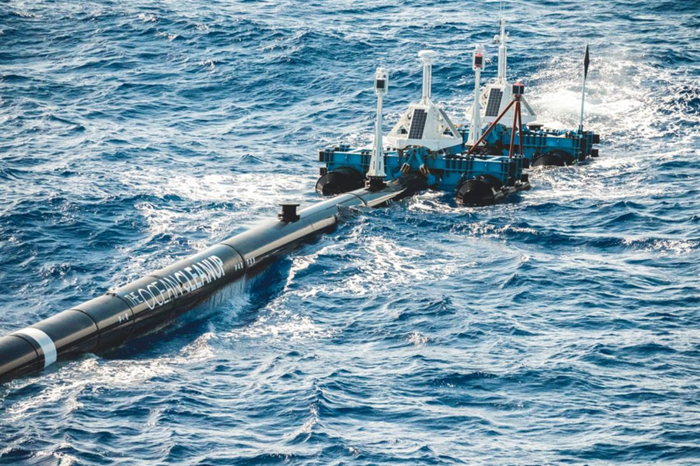
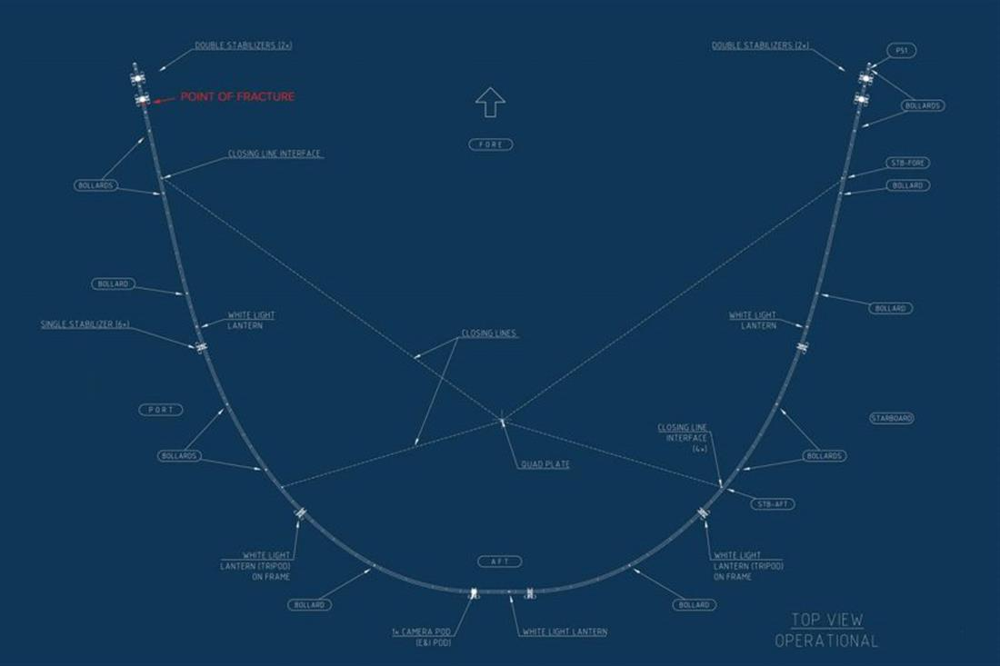

The Ocean Cleanup redeployed to tackle Great Pacific Garbage Patch
Natashah Hitti | 7 hours ago 1 comment
A floating device employed by The Ocean Cleanup project has been upgraded and returned to sea in a second attempt to catch the plastic waste circulating in the Pacific Ocean.
After being installed at the so-called Great Pacific Garbage Patch (GPGP) in September last year, the system – nicknamed Wilson – broke down in January 2019 after a stress concentration caused a fatigue fracture in one of its floating barriers.
System redeployed after four months
On 21 June, Boyan Slat, creator of The Ocean Cleanup project, announced on Twitterthat the upgraded system was on its way to the GPGP after just four months of repair.
The device is expected to arrive at the deployment site tomorrow, 25 June.
'Hopefully nature doesn't have too many surprises in store for us this time,' read a tweet by Slat. 'Either way, we're set to learn a lot from this campaign.'
Following the breakdown in January, the engineering team quickly began upgrading the device, starting with an improvement of the structural design by simplifying the flexible piping and allowing minimal fluctuations in the wall thickness.
'By adapting the design to address these unknown learning opportunities, we aim to have a system that can effectively capture plastic and withstand the forces of the ocean,' The Ocean Cleanup stated.
Criticism of the project remains
The Ocean Cleanup initiative aims to eventually remove 90 per cent of plastic waste from the world's oceans using a giant C-shaped tube that acts as a coastline to trap some of the 1.8 trillion pieces of plastic in the GPGP while allowing marine life to safely swim beneath it.

Skepticism about the effectiveness of the device emerged as the organisation published an analysis of why its first rig failed at the start of this year, with Italian environmentalist Cristina Gabetti describing it as 'a dream that seduced many people and donors'.
Gabetti added that the GPGP, where there are plans to deploy up to 60 waste-collecting rigs in due course, has low concentrations of mostly very small plastic particles spaced far apart, making effective capture of plastic difficult.
'It's a soup more than an island [of floating debris],' she told Dezeen last month, adding that calling it a garbage patch is a 'huge semantic mistake'.
It has also been suggested that The Ocean Cleanup diverts attention away from projects that aim to prevent plastic entering oceans in the first place.
Fluctuations in speed essential
In addition to the structural failure of its tubular plastic boom, the project leaders found that in some conditions the floating rig moved slower than the plastic it was trying to capture. This meant that items it had collected floated back out into the open sea.
The updated system hopes to solve this issue by trialling giant inflatable buoys on the front of the device, which will tow the system forward, propelled by the force of the wind.
'To effectively remove vast amounts of plastic, we need our system to be able to catch and retain plastic for long periods of time with minimal plastic loss,' The Ocean Cleanup stated.
'To retain the captured plastic, it is not as important if the system moves slower or faster than the plastic, rather the key is consistency: the velocity different must either always be positive or negative.'
'In other words, the system must always go faster than the plastic or always go slower than the plastic,' it continued. 'Fluctuations in the speed will prevent the plastic from staying within the system – as we saw during the previous campaign.'
Engineers have tweaked design
If the inflatable buoys fail to speed up the system, a backup plan will be trialled that involves attaching a 20-meter-diameter parachute-like sea anchor to the device, which will turn it around and, in theory, maintain a slower speed than the plastic.
As the rail connection – also known as the dovetail connection – was the cause of the fatigue fracture in January, The Ocean Cleanup engineers have eliminated this aspect of the design.
By bringing the screen slightly forward and connecting it to the pipe using slings, they have simplified the connection to the system, which should allow them to minimise stress concentrations. Simplifications to the design also allowed the engineers to eliminate the stabiliser frames to ease the load on the pipe.
'The basic principle behind the iterative design process is to test, learn, and repeat until you have a proven concept,' said The Ocean Cleanup.
'The system is aimed at proving the technology; however, we accept that we might find more unknowns that will lead to further adaptations to the design,' it added.
'In either case, we expect to learn more about the overall system design and the performance of our technology with this system.

SOURCE: DEZEEN